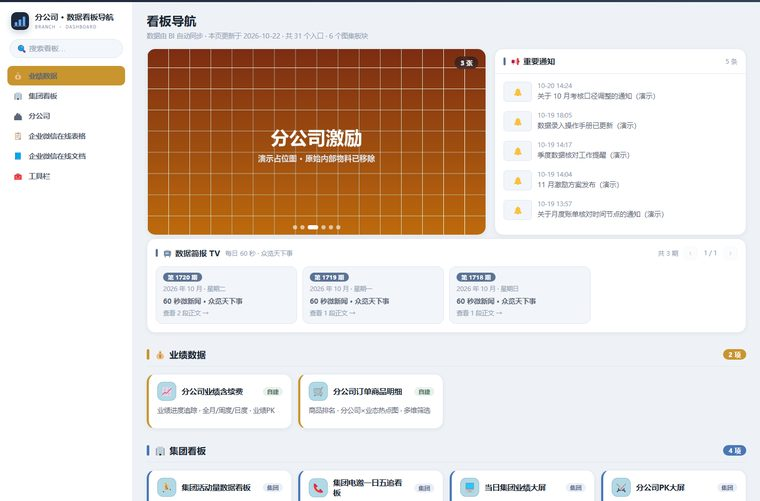
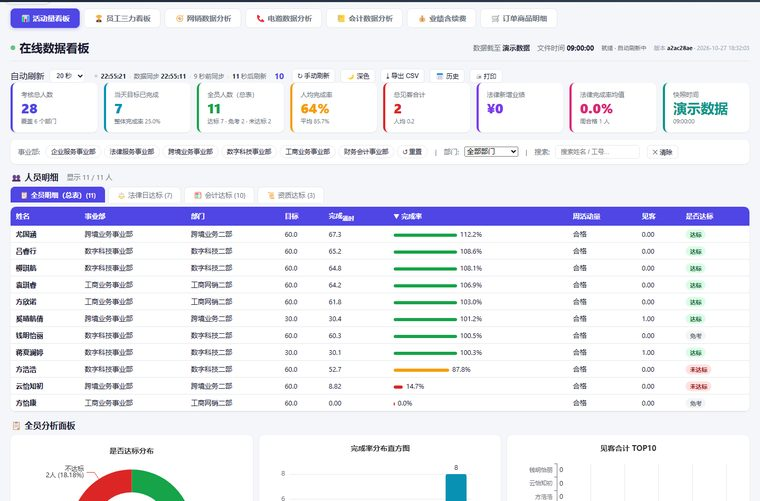
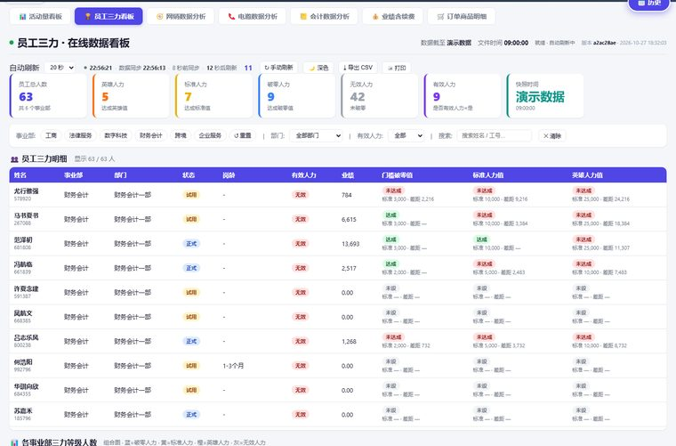
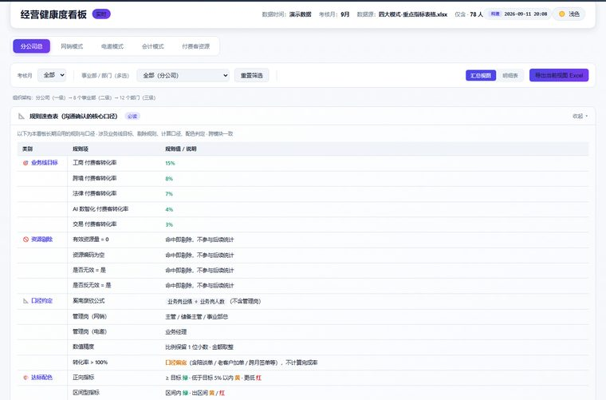
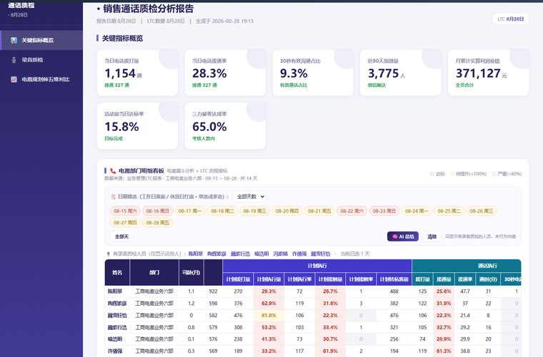
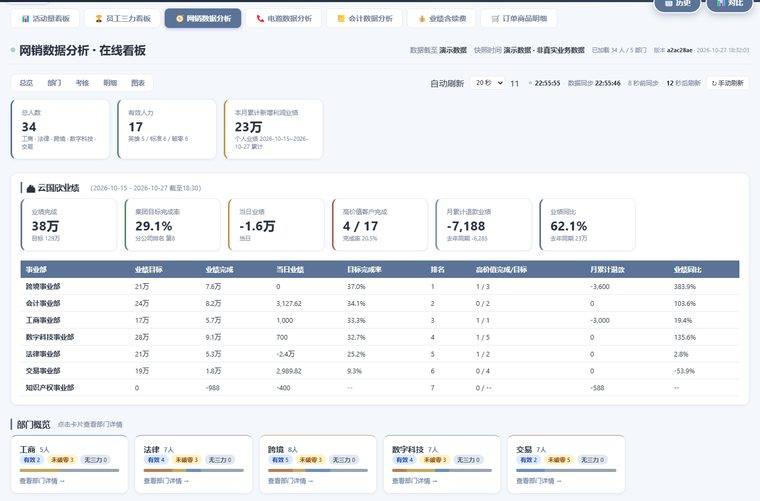
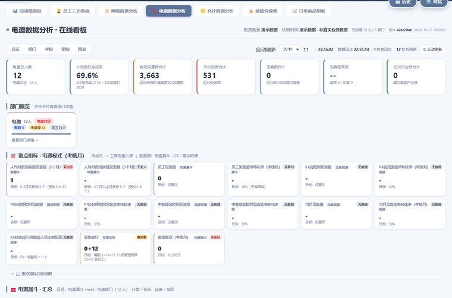
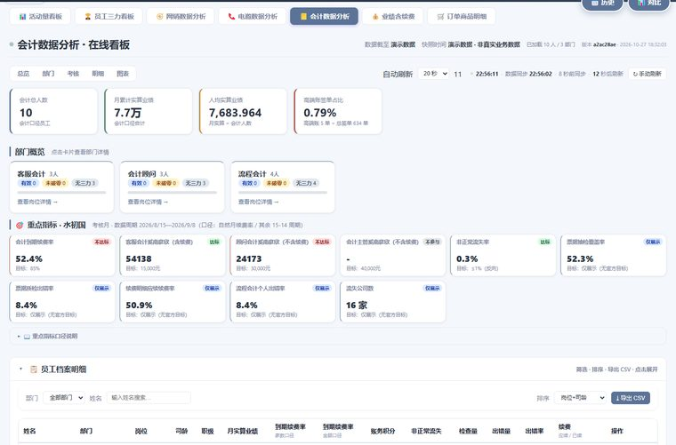
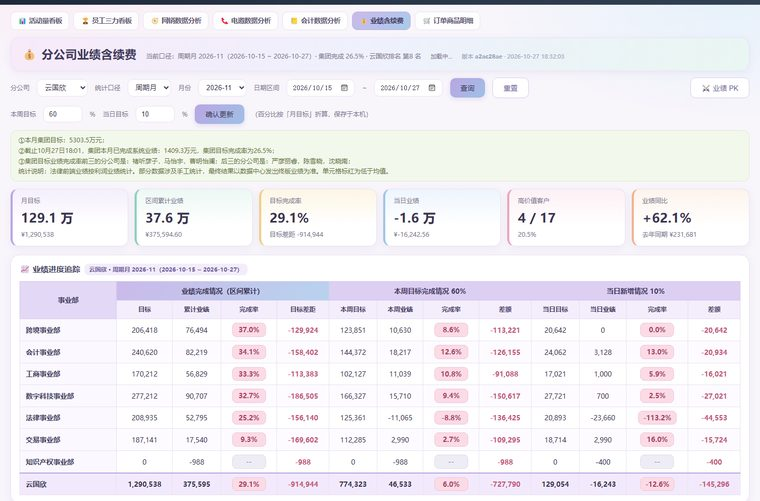
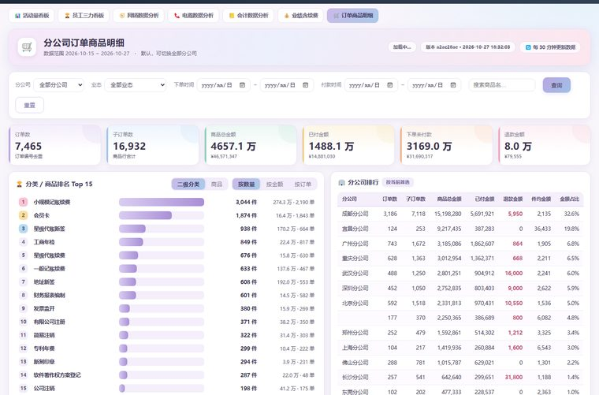

一套面向销售团队的数据运营系统：从企业 BI 取数、Excel 公式重算、指标口径计算， 到静态看板生成、指纹判变发布、企业微信群推送——全链路无人值守。 覆盖活动量考核、组织健康度诊断、通话质检评分三条业务线，累计支撑百人级团队日常经营。
SHA256，与上次发布指纹比对，一致则整段跳过。
配合退出码语义（23 = DEPLOY / 0 = SKIP），调度器无需解析日志即可决策，
避免重复上传与无谓算力消耗。

聚合入口交互六大分区、31 个入口的统一聚合门户：侧栏滚动定位、全局搜索、公告弹窗、简报轮播、看板相册。
打开导航页
核心看板交互KPI 总览、事业部/部门过程量、全员明细（总表 / 法律日达标 / 会计达标 / 资质达标四套 Tab）、图表分析、历史趋势。
打开看板
人力结构交互英雄 / 标准 / 破零 / 无效四层人力分级，支持按事业部下钻，直接对应激励政策判定。
打开看板
组织诊断交互四大经营模式统一打分：指标口径规则库、复合健康分、多级下钻对比、红黄绿三色达标判定。
打开看板
AI 质检交互827 条录音增量转写，按五维（开场介绍 / 痛点价值 / 需求挖掘 / 异议处理 / 加微埋点）自动打分并给出改进建议。
打开看板
过程量交互网销漏斗逐人逐环节拆解：资源 → 拨打 → 接通 → 加微 → 见客，定位转化断点。
打开看板
过程量交互电话邀约过程量追踪，通时、拨打、接通三率联动，按日/周考核口径分列。
打开看板
过程量交互财务侧活动量考核，含票据抽检与个人出错率统计，独立数据通道挂载。
打开看板
经营结果交互新签与续费合并口径的收入看板，支持事业部、团队、个人三级下钻与环比。
打开看板
明细穿透交互订单级明细穿透查询，支持多条件组合筛选与分页，用于业绩归因核对。
打开看板| 问题现象 | 根因与解决 |
|---|---|
看板读到的指标全是 None |
源表含 2.8 万个公式与 9 张透视表，其中约 700 个 XLOOKUP 跨表引用。openpyxl 读写会丢失公式缓存值。改为 WPS COM 整块写入并等待句柄释放，公式实时重算。 |
| 手动运行正常，计划任务必定失败 | Windows 计划任务以高完整性（High IL）运行时不读取 HKCU 用户级注册表，而 WPS 只把 Excel COM 类注册在 HKCU。试过降权重启、CreateProcessAsUser、经 explorer 启动三条路均无效；最终方案是启动时自愈——把 ProgID / CLSID / LocalServer32 补写进 HKLM。 |
| 某事业部员工在看板上「消失」 | 主表 sheet 只含 4 个事业部 22 人，会计 16 人不在其中——不是 bug，是数据源结构如此。为该板块单独挂载数据通道，前端按数据存在性自动显隐。 |
| 周合格率虚高 40% | 「当日是否达标」与「滚动周活动量合格」是两套独立口径。周合格率分母只能算正常考核人员（会计 16 人中 5 人不考核活动量）。前端显式标注口径，双口径绝不混算。 |
| 页面加载后偶发整页空白 | 数据层字段被裁剪后，前端读 undefined 抛错中断渲染。确立规则：敏感字段置空而非删除，保持数据结构契约稳定；同时页面内嵌兜底数据，fetch 失败自动降级，永不白屏。 |
| 发布链接换账号即失效 | 静态托管的分享链接绑定发布账号。旧链接一旦公开无法完全回收——这是所有公开演示必须先做全量脱敏的根本原因。 |
BI 系统登录取数 → 跨表 Sheet 复制 → HTML 导出与后处理 → Web 目录发布。 含可视化配置编辑器（Tkinter）、任务调度器、COM 引擎进程管理与磁盘清理策略。 解决「每天手工下载 10 张报表再复制粘贴」的重复劳动。
把看板数据渲染成图片 + 文案，定点推送到企业微信群。三条独立链路（活动量 / 三力 / PK）， 支持测试群灰度、发送结果校验、失败只报错不重试（避免重复刷屏）。
fetch 失败自动降级，弱网与断网都能打开| 对象 | 处理方式 |
|---|---|
| 员工姓名 | 确定性哈希映射为虚构姓名（同一人始终对应同一化名），共处理 174 个身份 |
| 工号 | 重新编号为 100000+ 区段，保证不与原号冲突 |
| 组织架构 | 事业部 / 部门名改为通用名称，剥离城市与公司标识 |
| 客户信息 | 客户公司全称替换为「示例客户 NNN 公司」，合同号 / 订单号替换为占位符 |
| 通话数据 | 音频地址、转写正文、分段文本全部清空，仅保留评分维度与结论 |
| 基础资源 | 密钥、账号、内网域名、本机绝对路径、对象存储桶名全部剔除 |
| 历史留档 | 裁剪至最近 7 天，逐日同样脱敏 |
脱敏采用结构化字段处理 + 全文本全局替换双层机制：先按字段名对 JSON 做结构化映射， 再对所有文本（含 HTML 注释、内嵌兜底数据块、深层嵌套数组）做姓名全集替换， 避免只处理表层而漏掉嵌套结构。脱敏脚本与校验脚本一并入库，可复现。